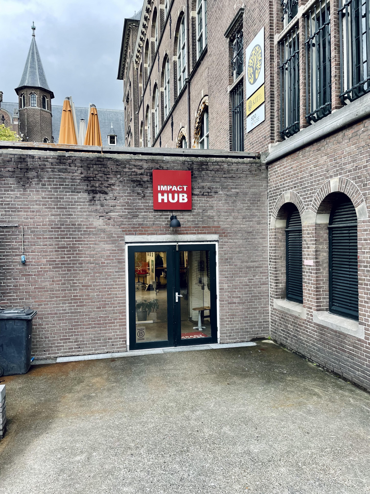
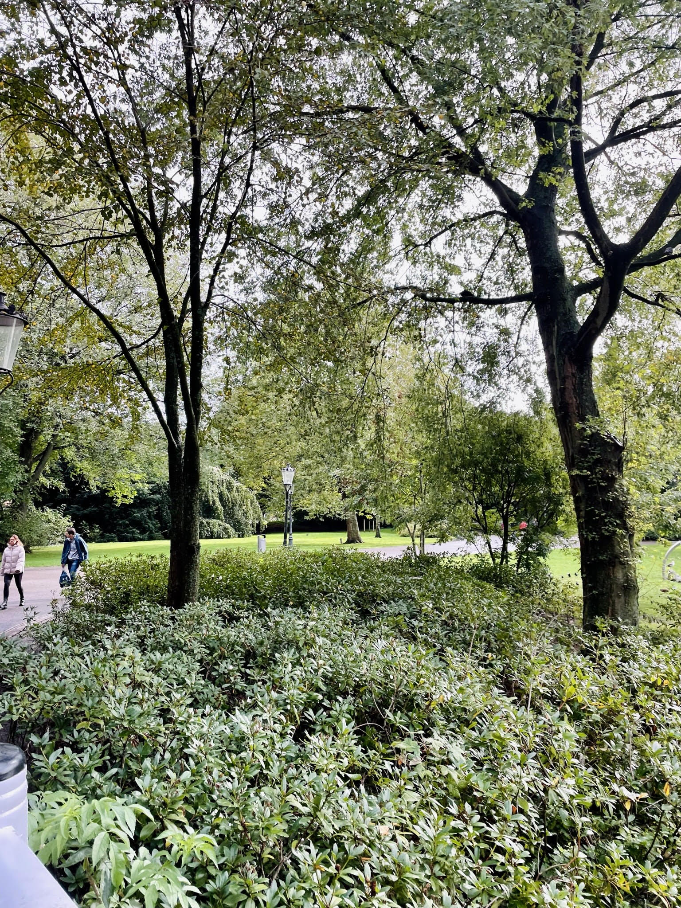

Wat houd de impact hub in?
Impact hub, de naam zegt het al. De impact hub, gelegen in Oosterpark, is onderdeel van een impact hub netwerk die bouwen naar een nieuwe economie. Het impact hub netwerk bestaat uit impactondernemers en innovators die constant bezig zijn met het bouwen van deze nieuwe economie. Een economie waarin impact op de markt de norm is. Wat mogelijk is door ondernemers, voor ondernemers.
De impact hub zit bij de KIT in Amsterdam, maar daar houd het niet op. Impact Hub in ontstaan in London, waar de eerste zogenaamde ‘hubmakers’ een ruimte creërden waar innovators en ondernemers samen konden komen. In 2008 opende de impact hub in Amsterdam, toen nog elders gevestigd. Na een paar verhuizingen kwam in 2016 de Impact Hub gevestigd bij KIT in Oosterpark, de perfecte plek voor de Impact Hub. KIT is een locatie waar organisaties samen komen die gefocust zijn op door middel van ondernemerschap, te bouwen naar een nieuwe duurzamere impactvolle economie.
